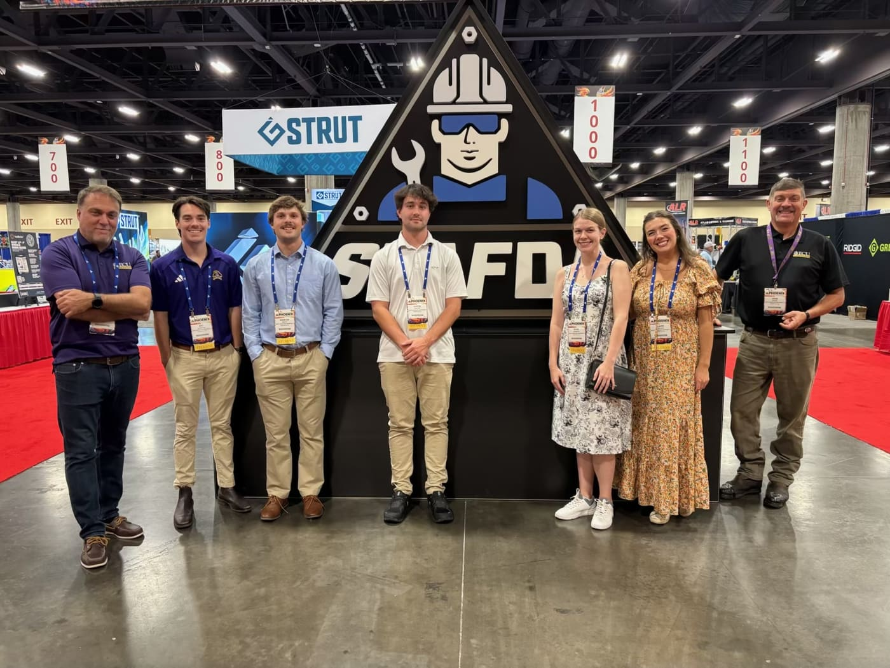

Operations and Supply Chain Management student at East Carolina University with a 3.9 GPA. Former Division I full-scholarship student-athlete in Track & Cross Country.
I'm interested in how businesses move - how supply chains are optimized, and how data-driven decisions reduce waste and improve performance. This past summer I interned at Ford Australia's Parts Distribution Center in Melbourne, streamlining processes and supporting urgent parts dispatch.
My goal is to become a Supply Chain Analyst. Open to full-time opportunities starting May 2027.
